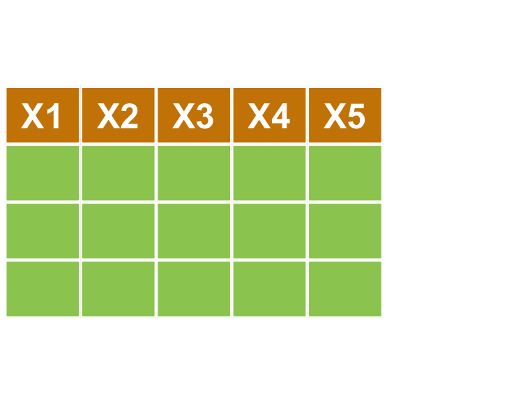
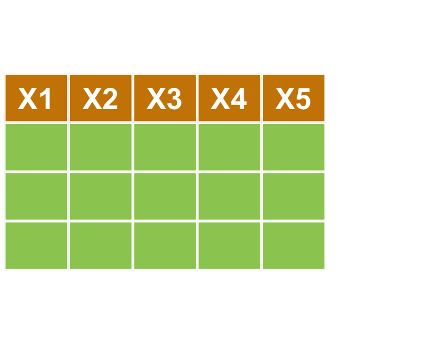

Chapter 3 ETL - Using dplyr
Rafe C. H. Liu / Johnson Hsieh / George Chao, LastUpdate: 2018-07-16
3.1 Data Wrangling

3.2 Dataset
- ubike x weather 資料檔(右鍵另存新檔)
# 必先以 getwd(), setwd() 確認 Working Directory!
# read.csv
ubike <- read.csv(file = "./data/ubike-weather-big5.csv",
colClasses = c("factor","integer","integer","factor","factor",
"numeric","numeric","integer","numeric","integer",
"integer","numeric","numeric", "integer","integer",
"numeric","numeric","numeric", "numeric","numeric",
"numeric", "numeric","numeric"),
fileEncoding = 'BIG-5',
stringsAsFactors = F)
# colClasses 控制每個欄位的 class，這可使讀檔加速
# fileEncoding 定義檔案編碼
# stringsAsFactors 設定是否自動將文字欄位轉成類別格式- 中文欄位問題
- CAUTION!: 雖然欄位名稱可以換成中文，但是不建議
colnames(ubike) <- c("日期","時間","場站代號","場站區域","場站名稱",
"經度","緯度","總停車格","平均車輛數","最大車輛數",
"最小車輛數","車輛數標準差","平均空位數","最大空位數","最小空位數",
"空位數標準差","氣溫","最高溫","最低溫","溼度",
"氣壓","最大風速","降雨量")| 欄位名稱 | 代號 | 欄位名稱 | 代號 |
|---|---|---|---|
| 日期 | date | 車輛數標準差 | std.sbi |
| 時間 | hour | 平均空位數 | avg.bemp |
| 場站代號 | sno | 最大空位數 | max.bemp |
| 場站區域 | sarea | 最小空位數 | min.bemp |
| 場站名稱 | sna | 空位數標準差 | std.bemp |
| 經度 | lat | 氣溫 | temp |
| 緯度 | lng | 最高溫 | max.temp |
| 總停車格 | tot | 最低溫 | min.temp |
| 平均車輛數 | avg.sbi | 溼度 | humidity |
| 最大車輛數 | max.sbi | 氣壓 | pressure |
| 最小車輛數 | min.sbi |
- Quick Review
# head可以取出前幾列
head(ubike)
# tail可以取最後幾列
tail(ubike)
# structure, summary of ubike dataset
str(ubike)
summary(ubike)
# 選擇單一欄位
ubike[,4]
ubike[,"sna"]
ubike[["sna"]]
ubike$sna
# 利用座標來取值，df[row,col] 第一個數表示列位，第二個數表示欄位
ubike[3,2]
# 可一次選擇多列多欄
ubike[c(3:4), c(2:5,7)]
# 加上負號可剔除列位欄位
ubike[c(3:4), -c(6:21)]- Quiz: Conditional Slicing，
%in%特殊演算子 (Special Operator) 表示？
ubike[ubike$sna %in% c("台北市災害應變中心", "世貿三館"), ]3.3 Pipeline Style
- 程式寫作
- 壓縮的程式碼不易閱讀，展開的程式碼會產生很多暫存變數
- 套件
magrittr(dplyr相依套件) 定義%>%特殊演算子，導入 Pipeline 的寫作方式，解決了這個問題
# OLD school
ans1 <- ubike$sna
ans1.1 <- unique(ans1) # unique可列出所有不重複的項目
print(head(ans1.1, n = 10))
# pipeline style
library(magrittr)
ubike$sna %>%
unique() %>% head(n = 10) %>%
print()
3.4 library(dplyr)
- A Grammar of Data Manipulation
- 讓 R 使用者可以用更有彈性的方式來處理資料
- 整合
magrittrpipeline - 針對
data.frame做設計（名稱中的d）
- 講的一嘴好扣
- 將資料整理流程步驟化
- 口語化的函式命名：
filter,arrange… - 結合資料整理工具優點（ex. Excel, SQL）
- 官方學習文件：
vignette- 更詳細的 dplyr 介紹可以閱讀 dplyr 的小論文
- 大部分的 R 套件開發者會針對一個主題撰寫小論文做介紹
vignette(all = TRUE, package = "dplyr")
vignette("introduction", package = "dplyr")- 常用指令
filter對列做篩選select對欄做篩選mutate更改欄或新增欄arrange排列group_by+summarise依照類別處理bind_cols,bind_rows單一資料源整併merge,left_join多資料源合併
- 實作範例
- 小明想在永和找到新房子，希望以後上下班都靠 ubike 通勤，希望早上可以輕鬆租到車，下班後也可以輕鬆還車。
- 請幫他找出中和區早上七點腳踏車最多的場站。
- 比較
mutate()與summarise()之不同
- 小明想在永和找到新房子，希望以後上下班都靠 ubike 通勤，希望早上可以輕鬆租到車，下班後也可以輕鬆還車。
library(dplyr)
# reload the dataset
ubike <- read.csv(file = "./data/ubike-weather-big5.csv",
colClasses = c("factor","integer","integer","factor","factor",
"numeric","numeric","integer","numeric","integer",
"integer","numeric","numeric", "integer","integer",
"numeric","numeric","numeric", "numeric","numeric",
"numeric", "numeric","numeric"),
fileEncoding = 'BIG-5',
stringsAsFactors = F)
head(ubike)
ubike %>%
select(hour, sarea, sna, avg.sbi) %>%
filter(sarea == '中和區' & hour == 7) %>%
mutate(avg.sbi = floor(avg.sbi))
ubike %>%
select(hour, sarea, sna, avg.sbi) %>%
filter(sarea == '中和區' & hour == 7) %>%
group_by(hour, sarea, sna) %>%
summarise(avg = mean(avg.sbi) %>% round()) %>%
arrange(avg %>% desc())3.4.1 select
select(ubike, hour, sarea, sna, avg.sbi) 
- 「選擇」時間、場站區域、場站名稱、平均車輛數
| hour | sarea | sna | avg.sbi |
|---|---|---|---|
| 15 | 大安區 | 捷運國父紀念館站(2號出口) | 24.000 |
| 15 | 信義區 | 台北市政府 | 10.333 |
| 15 | 信義區 | 市民廣場 | 39.333 |
| 15 | 信義區 | 興雅國中 | 34.167 |
| 15 | 信義區 | 世貿二館 | 31.333 |
| 15 | 信義區 | 信義廣場(台北101) | 23.571 |
3.4.2 filter
select(ubike, hour, sarea, sna, avg.sbi) %>%
filter(sarea == '中和區' & hour == 7)  

- 「篩選」出中和區的資料
| hour | sarea | sna | avg.sbi |
|---|---|---|---|
| 7 | 中和區 | 秀山國小 | 0.000 |
| 7 | 中和區 | 捷運永安市場站 | 1.733 |
| 7 | 中和區 | 中和公園 | 0.267 |
| 7 | 中和區 | 秀山國小 | 33.800 |
| 7 | 中和區 | 捷運永安市場站 | 6.467 |
| 7 | 中和區 | 中和公園 | 4.600 |
| 7 | 中和區 | 秀山國小 | 37.400 |
| 7 | 中和區 | 捷運永安市場站 | 12.867 |
| 7 | 中和區 | 中和公園 | 1.467 |
| 7 | 中和區 | 秀山國小 | 31.867 |
| 7 | 中和區 | 捷運永安市場站 | 19.267 |
| 7 | 中和區 | 中和公園 | 29.067 |
| 7 | 中和區 | 捷運永安市場站 | 13.600 |
| 7 | 中和區 | 中和公園 | 6.133 |
| 7 | 中和區 | 秀山國小 | 38.600 |
| 7 | 中和區 | 秀山國小 | 33.000 |
| 7 | 中和區 | 捷運永安市場站 | 1.600 |
| 7 | 中和區 | 中和公園 | 9.200 |
3.4.3 mutate
select(ubike, hour, sarea, sna, avg.sbi) %>%
filter(sarea == '中和區' & hour == 7) %>%
mutate(avg.sbi = floor(avg.sbi)) 

- 「變化」新增欄位以計算有車率
| hour | sarea | sna | avg.sbi |
|---|---|---|---|
| 7 | 中和區 | 秀山國小 | 0 |
| 7 | 中和區 | 捷運永安市場站 | 1 |
| 7 | 中和區 | 中和公園 | 0 |
| 7 | 中和區 | 秀山國小 | 33 |
| 7 | 中和區 | 捷運永安市場站 | 6 |
| 7 | 中和區 | 中和公園 | 4 |
| 7 | 中和區 | 秀山國小 | 37 |
| 7 | 中和區 | 捷運永安市場站 | 12 |
| 7 | 中和區 | 中和公園 | 1 |
| 7 | 中和區 | 秀山國小 | 31 |
| 7 | 中和區 | 捷運永安市場站 | 19 |
| 7 | 中和區 | 中和公園 | 29 |
| 7 | 中和區 | 捷運永安市場站 | 13 |
| 7 | 中和區 | 中和公園 | 6 |
| 7 | 中和區 | 秀山國小 | 38 |
| 7 | 中和區 | 秀山國小 | 33 |
| 7 | 中和區 | 捷運永安市場站 | 1 |
| 7 | 中和區 | 中和公園 | 9 |
3.4.4 group_by
select(ubike, hour, sarea, sna, avg.sbi) %>%
filter(sarea == '中和區' & hour == 7) %>%
group_by(hour, sarea, sna) 
- 將資料依照某變數組成「群組」
| hour | sarea | sna | avg.sbi |
|---|---|---|---|
| 7 | 中和區 | 秀山國小 | 0.000 |
| 7 | 中和區 | 捷運永安市場站 | 1.733 |
| 7 | 中和區 | 中和公園 | 0.267 |
| 7 | 中和區 | 秀山國小 | 33.800 |
| 7 | 中和區 | 捷運永安市場站 | 6.467 |
| 7 | 中和區 | 中和公園 | 4.600 |
| 7 | 中和區 | 秀山國小 | 37.400 |
| 7 | 中和區 | 捷運永安市場站 | 12.867 |
| 7 | 中和區 | 中和公園 | 1.467 |
| 7 | 中和區 | 秀山國小 | 31.867 |
| 7 | 中和區 | 捷運永安市場站 | 19.267 |
| 7 | 中和區 | 中和公園 | 29.067 |
| 7 | 中和區 | 捷運永安市場站 | 13.600 |
| 7 | 中和區 | 中和公園 | 6.133 |
| 7 | 中和區 | 秀山國小 | 38.600 |
| 7 | 中和區 | 秀山國小 | 33.000 |
| 7 | 中和區 | 捷運永安市場站 | 1.600 |
| 7 | 中和區 | 中和公園 | 9.200 |
3.4.5 summarise
select(ubike, hour, sarea, sna, avg.sbi) %>%
filter(sarea == '中和區' & hour == 7) %>%
group_by(hour, sarea, sna) %>%
summarise(avg = mean(avg.sbi) %>% round()) 
- 針對各組進行計算
| hour | sarea | sna | avg |
|---|---|---|---|
| 7 | 中和區 | 中和公園 | 8 |
| 7 | 中和區 | 捷運永安市場站 | 9 |
| 7 | 中和區 | 秀山國小 | 29 |
3.4.6 arrange
select(ubike, hour, sarea, sna, avg.sbi) %>%
filter(sarea == '中和區' & hour == 7) %>%
group_by(hour, sarea, sna) %>%
summarise(avg = mean(avg.sbi) %>% round()) %>%
arrange(avg %>% desc())

| hour | sarea | sna | avg |
|---|---|---|---|
| 7 | 中和區 | 秀山國小 | 29 |
| 7 | 中和區 | 捷運永安市場站 | 9 |
| 7 | 中和區 | 中和公園 | 8 |
- Quiz: 小明發現住信義區的話，八點騎腳踏車就可以準時上班，還可以順便吃早餐，請幫忙找出信義區各車站八點車子最多的站
# WRITE YOUR CODE| hour | sarea | sna | avg |
|---|---|---|---|
| 8 | 信義區 | 捷運市政府站(3號出口) | 98 |
| 8 | 信義區 | 福德公園 | 31 |
| 8 | 信義區 | 興雅國中 | 31 |
| 8 | 信義區 | 台北市災害應變中心 | 30 |
| 8 | 信義區 | 世貿三館 | 29 |
| 8 | 信義區 | 世貿二館 | 29 |
| 8 | 信義區 | 吳興公車總站 | 29 |
| 8 | 信義區 | 三張犁 | 27 |
| 8 | 信義區 | 松山家商 | 26 |
| 8 | 信義區 | 市民廣場 | 24 |
| 8 | 信義區 | 信義廣場(台北101) | 23 |
| 8 | 信義區 | 捷運象山站 | 22 |
| 8 | 信義區 | 松德站 | 21 |
| 8 | 信義區 | 松德公園 | 20 |
| 8 | 信義區 | 台北市政府 | 16 |
| 8 | 信義區 | 五常公園 | 15 |
| 8 | 信義區 | 捷運台北101/世貿站 | 15 |
| 8 | 信義區 | 臺北醫學大學 | 14 |
| 8 | 信義區 | 仁愛逸仙路口 | 13 |
| 8 | 信義區 | 中強公園 | 10 |
| 8 | 信義區 | 捷運永春站(2號出口) | 8 |
| 8 | 信義區 | 永吉松信路口 | 8 |
| 8 | 信義區 | 基隆光復路口 | 5 |
- Quiz: 小明喜歡玩遙控飛機，在中和希望找一個下午三點風比較小的地點吧
# WRITE YOUR CODE| sna | avg_anemo |
|---|---|
| 白雲國小 | 2.094692 |
| 汐止區公所 | 2.281363 |
| 汐科火車站(北) | 2.283358 |
| 汐止火車站 | 2.393386 |
| 國泰綜合醫院 | 2.472844 |
| 樟樹國小 | 2.509820 |
| 金龍國小 | 2.718062 |
| 文化白雲公園 | NaN |
| 金龍公園 | NaN |
3.4.7 bind
bind_rows(a,b)bind_cols(a,b)


- bind_rows
V1 <- data.frame('x1' = c("a", "b"), 'x2' = c(1, 2), stringsAsFactors = F)
V2 <- data.frame('x1' = c("c", "d"), 'x2' = c(3, 4), stringsAsFactors = F)
# rbind(V1, V2)
bind_rows(V1, V2) x1 x2
1 a 1
2 b 2
3 c 3
4 d 4- bind_cols
# cbind(V1, V2)
bind_cols(V1, V2) x1 x2 x11 x21
1 a 1 c 3
2 b 2 d 43.5 library(reshape2)
- Long & Wide Data
- melt
- wide format -> long format
- cast
- long format -> wide format
dcastfor data.frameacastfor vector, matrix and array
data("WorldPhones")
WP <- as.data.frame(WorldPhones)
knitr::kable(head(WP))| N.Amer | Europe | Asia | S.Amer | Oceania | Africa | Mid.Amer | |
|---|---|---|---|---|---|---|---|
| 1951 | 45939 | 21574 | 2876 | 1815 | 1646 | 89 | 555 |
| 1956 | 60423 | 29990 | 4708 | 2568 | 2366 | 1411 | 733 |
| 1957 | 64721 | 32510 | 5230 | 2695 | 2526 | 1546 | 773 |
| 1958 | 68484 | 35218 | 6662 | 2845 | 2691 | 1663 | 836 |
| 1959 | 71799 | 37598 | 6856 | 3000 | 2868 | 1769 | 911 |
| 1960 | 76036 | 40341 | 8220 | 3145 | 3054 | 1905 | 1008 |
3.5.1 melt
library(reshape2)
WP$year <- rownames(WP)
WP.melt <- melt(WP, id.var = 'year')
knitr::kable(head(WP.melt))| year | variable | value |
|---|---|---|
| 1951 | N.Amer | 45939 |
| 1956 | N.Amer | 60423 |
| 1957 | N.Amer | 64721 |
| 1958 | N.Amer | 68484 |
| 1959 | N.Amer | 71799 |
| 1960 | N.Amer | 76036 |
3.5.2 cast
WP.cast <- dcast(WP.melt, year ~ variable, value.var="value") | year | N.Amer | Europe | Asia | S.Amer | Oceania | Africa | Mid.Amer |
|---|---|---|---|---|---|---|---|
| 1951 | 45939 | 21574 | 2876 | 1815 | 1646 | 89 | 555 |
| 1956 | 60423 | 29990 | 4708 | 2568 | 2366 | 1411 | 733 |
| 1957 | 64721 | 32510 | 5230 | 2695 | 2526 | 1546 | 773 |
| 1958 | 68484 | 35218 | 6662 | 2845 | 2691 | 1663 | 836 |
| 1959 | 71799 | 37598 | 6856 | 3000 | 2868 | 1769 | 911 |
| 1960 | 76036 | 40341 | 8220 | 3145 | 3054 | 1905 | 1008 |
| 1961 | 79831 | 43173 | 9053 | 3338 | 3224 | 2005 | 1076 |
3.6 綜合演練
- 小明想知道信義區的腳踏車站晴天和雨天的使用率有何差別，提示：
filter、mutate、select、group_by、summarisedcastarrange
# WRITE YOUR CODE| sna | 晴天 | 雨天 |
|---|---|---|
| 永吉松信路口 | 0.8720583 | 0.4744500 |
| 信義廣場(台北101) | 0.7952094 | 0.5329188 |
| 捷運永春站(2號出口) | 0.7888917 | 0.4466667 |
| 市民廣場 | 0.7369417 | 0.3238917 |
| 捷運台北101/世貿站 | 0.7294856 | 0.6448654 |
| 基隆光復路口 | 0.7277750 | 0.7589000 |
| 仁愛逸仙路口 | 0.6532895 | 0.5921053 |
| 三張犁 | 0.6409129 | 0.4242424 |
| 五常公園 | 0.6233278 | 0.3536944 |
| 中強公園 | 0.6216667 | 0.7833333 |
3.7 Cross Analysis
- 交叉分析
- 組合兩個或兩個以上的變數進行分析，探討變數之間的關聯性
- 使用 dplyr + reshape2 / 樞紐分析表 來分析工作表的資料
- 當已萬念俱灰：EXCEL PIVOT TABLE
- Excel specifications and limits: 1,048,576 rows by 16,384 columns
- Excel 樞紐分析表也俗稱『交叉分析表』
- 能夠快速合併和比較的互動式表格
- 可以旋轉列和欄來檢視不同來源 > GO PIVOT!
- 最實用的職場技能
- F1, F1, F1

Rafe C.H. Liu (劉佳欣)
Data Thinking, Machine Learning & E-commerce expert
Contact Info | Linkedin Profile
Sepcial Thanks To Johnson Hsieh, George Chiao, Alto Li
Data Thinking, Machine Learning & E-commerce expert
Contact Info | Linkedin Profile
Sepcial Thanks To Johnson Hsieh, George Chiao, Alto Li